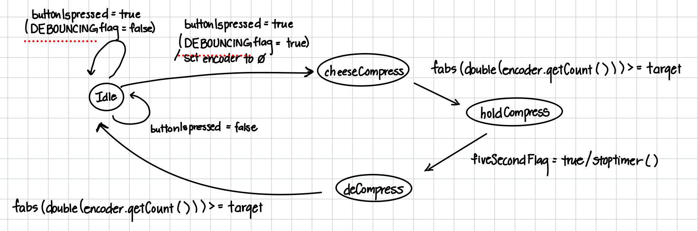
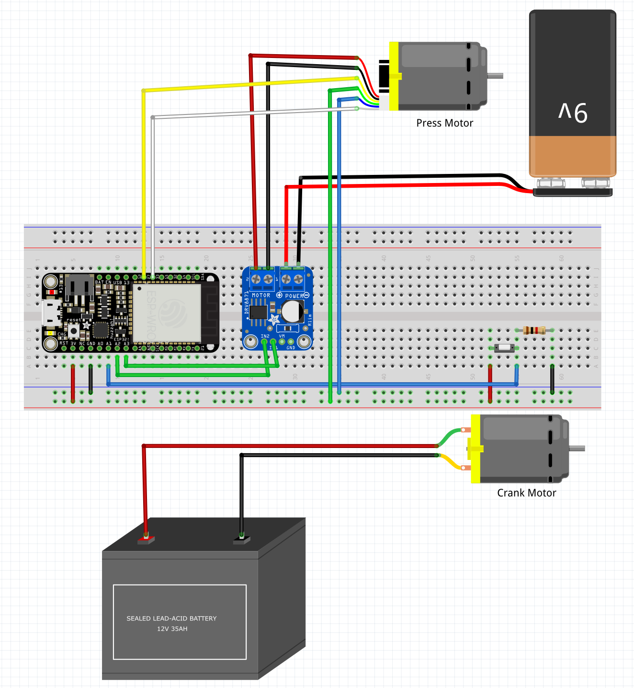

Software Integration
The cheese grater is controlled by an ESP32 running custom firmware. We use hardware timer interrupts for precise control of the lead screw and grater motors, and an encoder for position feedback. The state machine logic is implemented in C++ and ensures safe and reliable operation.
The main states are Idle, Cheese Compress, Hold Compress, and Decompress. Transitions are triggered by button presses and timer/encoder events, ensuring the device operates safely and efficiently.
State Transition Diagram

Sample Source Code
enum State {
idle,
cheeseCompress,
holdCompress,
deCompress
};
void loop() {
switch (state) {
case idle:
if (CheckForButtonPress()) { state = cheeseCompress; }
break;
case cheeseCompress:
driveMotorForward(25);
state = holdCompress;
break;
case holdCompress:
startTimer();
while (!fiveSecondFlag) { delay(1); }
stopTimer();
state = deCompress;
break;
case deCompress:
driveMotorBackward(25);
state = idle;
break;
}
}
Wiring Diagram
